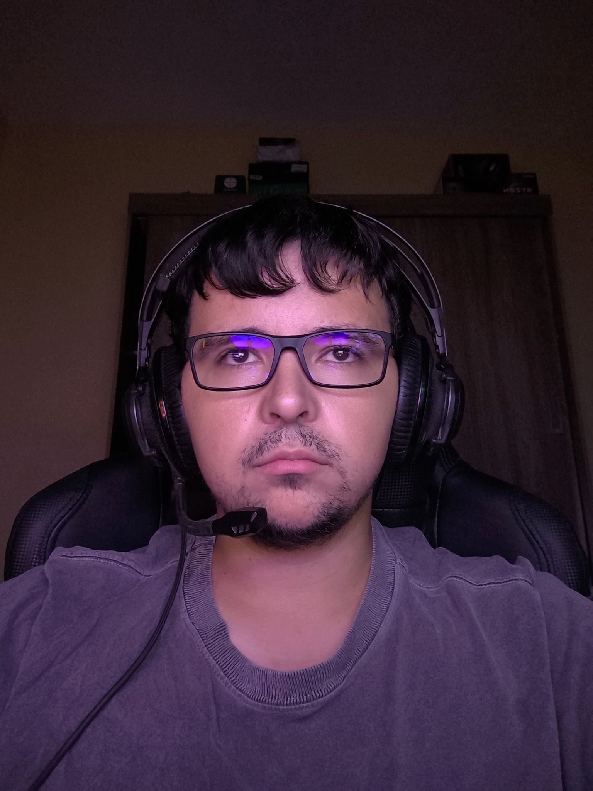

Desenvolvedor Front-End (Em formação)
Olá, meu nome é Matheus. Tenho 28 anos e sou estudante de Análise e Desenvolvimento de Sistemas na UNIP. Minha trajetória profissional começou na área de manutenção industrial como auxiliar técnico, o que me deu uma base muito sólida em raciocínio lógico e resolução de problemas. No entanto, minha verdadeira paixão está na tecnologia. Atualmente, dedico meus estudos e meu tempo livre ao desenvolvimento web, construindo projetos práticos e aprimorando minhas habilidades com HTML, CSS e JavaScript.
Busco uma oportunidade de estágio ou posição de nível júnior em Programação e Desenvolvimento Web para aplicar meus conhecimentos práticos em front-end (HTML, CSS e JavaScript). Tenho como objetivo entregar soluções digitais eficientes e evoluir profissionalmente dentro da empresa, com forte interesse em aprender tecnologias de back-end e, a longo prazo, consolidar minha carreira como desenvolvedor Full Stack.